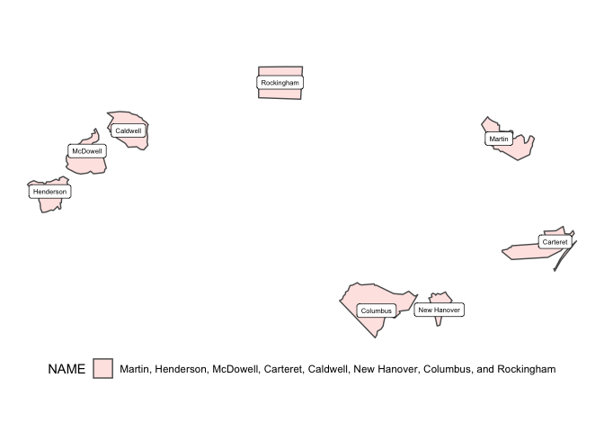

The goal of sfext is to extend existing functions from the {sf} package and offer a range of additional options for working with simple feature objects, bounding boxes, and data frame objects with coordinates or other spatial information.
Installation
You can install the development version of sfext like so:
# pak::pkg_install("elipousson/sfext")Examples
Get data with read_sf_ext and related functions:
nc <- read_sf_ext(path = system.file("shape/nc.shp", package = "sf"))Combine data with st_union_ext:
random_id <- sample(nrow(nc), size = 8)
nc_union <- st_union_ext(nc[random_id, ], name_col = "NAME")
ggplot() +
geom_sf(data = nc_union, aes(fill = NAME), alpha = 0.2) +
geom_sf_label(data = nc[random_id, ], aes(label = NAME), size = 2) +
theme(legend.position = "bottom")
#> Warning in st_point_on_surface.sfc(sf::st_zm(x)): st_point_on_surface may not
#> give correct results for longitude/latitude data Make grids set rows, columns, and aspect ratios using st_make_grid_ext:
# Make a 5 by 5 grid with a 8.5 by 11 aspect ratio filtered to x
plot(
st_make_grid_ext(
x = nc[24, ],
asp = 8.5 / 11,
ncol = 5,
nrow = 5,
filter = TRUE
)
)